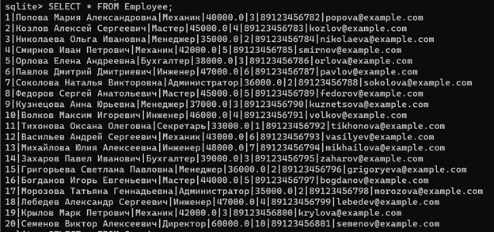
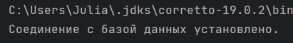
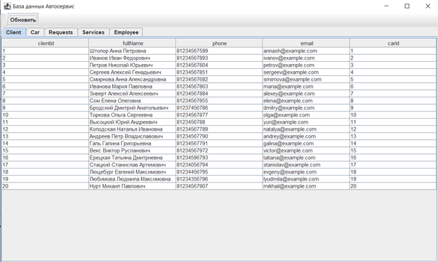

В качестве серверной части разработать базу данных в СУБД MySQL в соответствии с вариантом. База данных содержит таблицу, состоящую из не менее чем 5-ти полей и 20-ти записей. Клиентская часть должна быть разработана на языке Java. Каждый запрос должен быть реализован отдельным методом. Все методы могут принадлежать одному классу. Отдельно должен быть реализован класс, содержащий метод main().
Я выбрала вариант написания базы данных через SQLite и после подключила ее через IntelliJ IDEA на Java для отображения данных таблиц.
ER-диаграмма, отображающая структуру базы данных «Автосервис».
Таблица "Сотрудники" на SQLite.
Успешное соединение с БД на SQLite.
Вывод таблицы "Клиенты".